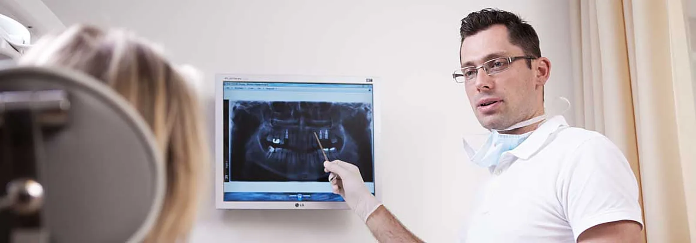

Esztétikus tömés
Nem csupán a lyuk tömése a cél, hanem a fog formájának és színének helyreállítása. Igény szerint betét (inlay) is.
Két fogorvos, egy rendelő a Jókai utcában: magánrendelés elérhető árakon, és a pécsi 30-as fogászati körzet ellátása.

A rendelőben két külön rendelési idő fut. Írja be az utcáját, és megmutatjuk, melyik vonatkozik Önre.
Kezdje el gépelni az utca nevét – a választ itt látja.
A 30-as körzet utcái: Alkotmány u. (1–65., 2–44.), Attila u., Barbakán tér, Báthory u., Dr. Boross István u., Forbát Alfréd u., Klimó György u., Kodály Z. u. (2–20., 1-től végig), Littke József u., Sánc u., Tábor köz, Tábor u.
| Hétfő, szerda, csütörtök | 8:00–18:00 |
| Kedd, péntek | 8:00–13:00 |
| Hétfő–szerda | 8:00–13:00 |
| Csütörtök | 12:00–18:00 |
| Péntek | 8:00–14:00 |
Egyéb igény esetén, megbeszélés alapján más időpontban is rendelkezésre állunk. A körzeti ellátás elsősorban berendelés alapján történik: időpontot telefonon kérjen.
A beavatkozásokat fájdalommentesen végezzük, és minden lépés előtt elmondjuk, milyen lehetőségek közül választhat.
Nem csupán a lyuk tömése a cél, hanem a fog formájának és színének helyreállítása. Igény szerint betét (inlay) is.
A gyulladt fogbél eltávolítása és a csatorna végleges tömése, általában 2–3 alkalom alatt.
Fémkerámia vagy fémmentes, cirkónium-oxid alapú pótlás, ideiglenes koronával a két kezelés között.
Részleges vagy teljes, kivehető pótlás – rejtett, nyomógombos rögzítéssel is.
Műgyökér a hiányzó fog helyére, teljes érzéstelenítésben. AlphaBio implantátummal.
Ínyvérzés, ínysorvadás kezelése parodontológus szakorvossal – a folyamat megállítható.
Rendelői és otthoni (éjszakai) fehérítés, előtte fogorvosi vizsgálattal és fogkő-eltávolítással.
A vizsgálat 10 000 Ft, és levonjuk, ha a kezelés nálunk történik.
Vizsgálatot kérek
Főorvos, egyetemi docens, a 3T Dental vezetője
30 éves klinikai tapasztalat; szakvizsgái: konzerváló fogászat és fogpótlástan–parodontológia, gyermekfogászat, fog- és szájbetegségek. Az implantációt 1995-ben, floridai tanulmányútján sajátította el, és Magyarországon az elsők között alkalmazta.
Fogorvos, parodontológus szakorvos
2004-ben évfolyamelsőként végzett a Pécsi Tudományegyetem Fogorvosi Szakán. A „Fogpótlástan és konzerváló fogászat” szakvizsgát kiváló minősítéssel tette le, 2015-ben parodontológiai szakvizsgát tett. Továbbképzései: esztétikai fogászat és implantológia.
Asszisztens: Lőcziné Perei Andrea
Ha a pótlás rendeltetésszerű használat mellett eltörik, meglazul vagy megreped, díjmentesen helyreállítjuk. Feltétel: 6 havonta ellenőrzés és rendszeres fogápolás.
A kezelés előtt kezelési tervet kap, így tudja, mire számíthat. Egészségpénztári számlát adunk.
A le nem mondott, illetve 24 órán belül lemondott időpont díja félóránként 5 000 Ft. Az árak tájékoztató jellegűek; a pontos összeget a kezelési terv tartalmazza.
„Dr Tóth András nagyon alapos, precíz és kedves fogorvos. Rendkívüli szakmai tudással rendelkezik.”
„A legjobb, legprofibb fogorvosi rendelő a városban … sosem félek odamenni.”
„Normál árak, kiválló ellátás.”
Hagyja meg a nevét és a telefonszámát, és visszahívjuk egy időpont egyeztetésére.
Ha más kérdése van, hívja a rendelőt: 06 72 233 200.
A beavatkozásokat fájdalommentesen végezzük. Fontosnak tartjuk, hogy a megfelelő szakmai munka és odafigyelés oldja a páciensek félelmét, szorongását.
A fogorvosi vizsgálat 10 000 Ft, a kezelési terv 15 000 Ft; mindkettő levonásra kerül, ha a kezelés nálunk történik.
Igen. A kezelés után számlát kap, ennek alapján az egészségpénztár visszatéríti a számlán igazolt összeget.
Írja be az utcáját a körzetkeresőbe. A körzet lakóinak ellátása elsősorban berendelés alapján történik, időpontot telefonon kérjen.
Kérjük, legalább 24 órával előtte mondja le. A le nem mondott, illetve 24 órán belül lemondott időpont díja félóránként 5 000 Ft.
Igen: tömésre 2 év, rögzített pótlásra 3 év, kivehető pótlásra 2 év, implantátumra 5 év garanciát vállalunk, ha a páciens 6 havonta ellenőrzésen megjelenik és fogait megfelelően ápolja.
3T Dental fogorvosi rendelő
7622 Pécs, Jókai u. 32.
Pécs belvárosában, könnyen megközelíthető helyen.
Rendelő: 06 72 233 200
E-mail: andras.toth@3tdental.hu

Eszközök, valamint elektronikus iratkezelési rendszer beszerzése a 3T Dental Kft.-nél (GINOP_PLUSZ-1.2.4-25-2025-00315). Támogatás: 6 590 210 Ft. A projekt keretében intraorális szkenner, foszforlemezes röntgendigitalizáló, autokláv és kompresszor került a rendelőbe.